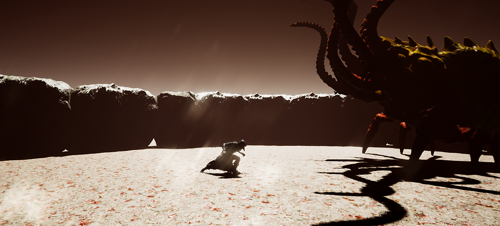
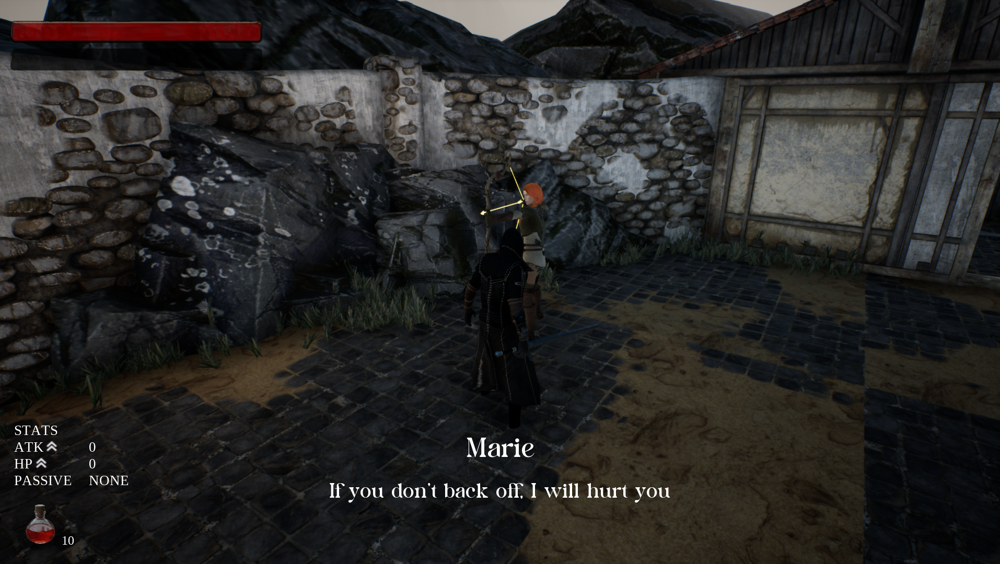
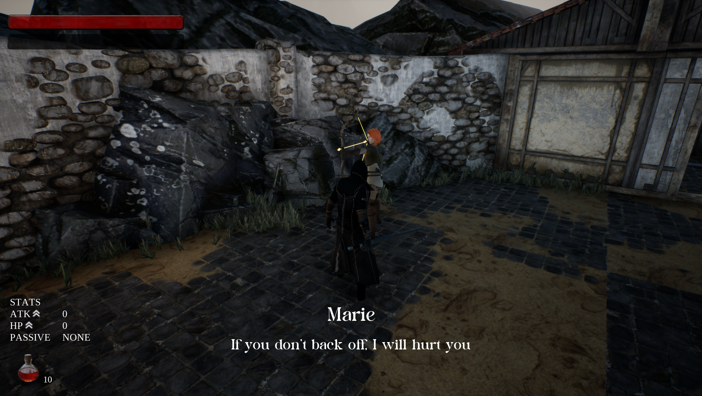

Le Peste Noir
A 3rd person action adventure game inspired by the soul-genre and Monster Hunter
- Role: AI/Audio Programmer
- Team Size: 6
- Project Length: Ongoing
- Software: Unreal, C++, Jira
This is our current game. Le Peste Noir is a semi-fantasy combat game set place in a medieval world. I am incharge of the audio, as well as ai, This was a daughnting task for I never touch behavior trees before. However while working on this project I have been able to make massive changes, with a boss (seen in image 4), Knight and witch enemies. However these are right now in development and I will have them to be seen in in the month of April. The game is expected to be avalabe to play in early May.
Images
 
